Wer fliegt da? Was liegt da?
50 Seevögel, Muscheln, Quallen und Strandfunde von Nord- und Ostsee, erkannt am Foto und an wenigen sicheren Merkmalen.
Am Strand im November
- Zehntausende Eiderenten und andere Meeresenten überwintern vor der Ostseeküste.
- Nach Winterstürmen liegen Bernstein, Donnerkeile und viele Muscheln im Spülsaum.
- Kegelrobben säugen ihre weißen Jungen auf der Helgoländer Düne.
- Sanderlinge rennen in Trupps vor den Wellen an den Inselstränden.
- Die ersten Basstölpel kehren zum Lummenfelsen auf Helgoland zurück.
- Laichballen der Wellhornschnecke liegen im Spülsaum der Nordsee.
- Bernsteinsuche lohnt nach auflandigem Sturm, vor allem an der Ostsee.
- Mantel- und Sturmmöwen aus dem Norden sind jetzt besonders zahlreich.
- Austernfischer kehren laut rufend zu ihren Brutplätzen zurück.
- Säbelschnäbler und Heringsmöwen kommen aus dem Süden zurück ins Wattenmeer.
- Die Trottellummen besetzen wieder die Felsbänder auf Helgoland.
- Lachmöwen tragen wieder ihre braune Kopfkappe.
- Zehntausende Ringelgänse fressen sich auf den Halligen satt für den Flug nach Sibirien.
- Riesige Schwärme von Alpenstrandläufern rasten auf dem Zug im Wattenmeer.
- Die ersten Flussseeschwalben sind zurück.
- Strandkrabben werden im wärmer werdenden Flachwasser aktiv.
- Möwen, Seeschwalben und Austernfischer brüten: Schutzzonen in Dünen und Salzwiesen beachten.
- Ringelganstage auf den Halligen, bevor die Gänse nach Sibirien aufbrechen.
- Die ersten Ohrenquallen treiben im Flachwasser.
- Schweinswale bekommen von Mai bis August ihre Kälber.
- Lummensprung auf Helgoland: Die jungen Trottellummen springen vom Felsen ins Meer.
- Seehunde bringen im Juni und Juli ihre Jungen auf den Sandbänken zur Welt.
- Junge Küstenvögel laufen durch Dünen und Salzwiesen: Hunde anleinen.
- Eiderenten-Weibchen führen ihre Küken in großen Gruppen an der Ostseeküste.
- Blaue Nesselquallen und erste Kompassquallen erscheinen in der Nordsee.
- Ein Großteil der Brandgänse Nordwesteuropas mausert im Wattenmeer und kann wochenlang nicht fliegen.
- Quallenzeit: Ohrenquallen, Kompassquallen und Feuerquallen werden häufiger angespült.
- Flussseeschwalben füttern ihre Jungen mit kleinen Fischen.
- Seestachelbeeren liegen zu Hunderten im Spülsaum.
- Die ersten Sanderlinge und Strandläufer kommen aus der Arktis zurück.
- Ohrenquallen erreichen an der Ostsee ihre größte Zahl.
- Junge Möwen in braunem Gefieder betteln an Stränden und Häfen lautstark um Futter.
- Säbelschnäbler sammeln sich in großen Trupps vor dem Wegzug.
- Große Lungenquallen werden an der Nordsee angespült.
- Zugvögel rasten zu Hunderttausenden im Wattenmeer, ein Höhepunkt des Vogeljahres.
- Feuerquallen treiben jetzt auch an der Ostsee.
- Die letzten Seeschwalben ziehen nach Westafrika.
- Die ersten Herbststürme spülen Muscheln und Tang an.
- Ringelgänse kehren aus Sibirien ins Wattenmeer zurück.
- Eiderenten sammeln sich in großen Trupps vor der Ostseeküste.
- Seegras und Tang werden nach Stürmen in langen Wällen angespült.
- Die Bernsteinsaison beginnt.
- Eiderenten und Mantelmöwen aus dem Norden sind jetzt zahlreich an der Küste.
- Kegelrobben bekommen von November bis Januar ihre Jungen.
- Herbststürme bringen Bernstein, Donnerkeile und Hühnergötter an den Strand.
- Nach Sturm liegen Seesterne und Herzigel im Spülsaum.
- Nach Stürmen gelegentlich verölte Seevögel am Strand: nicht anfassen, sondern melden.
- Weiße Kegelrobben-Junge liegen auf der Helgoländer Düne: mindestens 30 m Abstand halten.
- Meeresenten und Gänsesäger überwintern in Bodden und Buchten.
- An ruhigen Wintertagen ist der Spülsaum voller Funde.

Zuerst die Seevögel
Seevögel an der Küste
Möwen, Watvögel, Meeresenten und die Felsenbrüter von Helgoland: 16 Arten, die dir an Nord- und Ostsee begegnen.
 Eiderente50–71 cmFoto: Andreas Trepte, CC BY-SA 2.5
Eiderente50–71 cmFoto: Andreas Trepte, CC BY-SA 2.5 Basstölpel87–100 cm · nur NordseeFoto: Andreas Trepte, CC BY-SA 2.5
Basstölpel87–100 cm · nur NordseeFoto: Andreas Trepte, CC BY-SA 2.5 Trottellumme38–46 cm · nur NordseeFoto: Gary Bembridge, CC BY 2.0
Trottellumme38–46 cm · nur NordseeFoto: Gary Bembridge, CC BY 2.0 Austernfischer40–45 cmFoto: Andreas Trepte, CC BY-SA 2.5
Austernfischer40–45 cmFoto: Andreas Trepte, CC BY-SA 2.5 Säbelschnäbler42–45 cmFoto: Andreas Trepte, CC BY-SA 2.5
Säbelschnäbler42–45 cmFoto: Andreas Trepte, CC BY-SA 2.5 Brandgans55–65 cmFoto: Bernard Dupont, CC BY-SA 2.0
Brandgans55–65 cmFoto: Bernard Dupont, CC BY-SA 2.0 Ringelgans55–62 cmFoto: Andreas Trepte, CC BY-SA 2.5
Ringelgans55–62 cmFoto: Andreas Trepte, CC BY-SA 2.5 Sanderling18–21 cmFoto: Mdf, CC BY-SA 3.0
Sanderling18–21 cmFoto: Mdf, CC BY-SA 3.0 Alpenstrandläufer16–22 cmFoto: Charles Homler (Focus On Wildlife), CC BY-SA 4.0
Alpenstrandläufer16–22 cmFoto: Charles Homler (Focus On Wildlife), CC BY-SA 4.0 Mantelmöwe64–79 cmFoto: Jean-Pierre Bazard, CC BY-SA 3.0
Mantelmöwe64–79 cmFoto: Jean-Pierre Bazard, CC BY-SA 3.0 Flussseeschwalbe31–35 cmFoto: Andreas Trepte, CC BY-SA 2.5
Flussseeschwalbe31–35 cmFoto: Andreas Trepte, CC BY-SA 2.5 Silbermöwe55–67 cmFoto: Aiwok, CC BY-SA 3.0
Silbermöwe55–67 cmFoto: Aiwok, CC BY-SA 3.0 Kormoran80–100 cmFoto: MPF, CC BY-SA 4.0
Kormoran80–100 cmFoto: MPF, CC BY-SA 4.0 Sturmmöwe40–46 cmFoto: Andreas Trepte, CC BY-SA 2.5
Sturmmöwe40–46 cmFoto: Andreas Trepte, CC BY-SA 2.5 Lachmöwe34–38 cmFoto: Andreas Trepte, CC BY-SA 2.5
Lachmöwe34–38 cmFoto: Andreas Trepte, CC BY-SA 2.5 Heringsmöwe52–67 cmFoto: Andreas Trepte, CC BY-SA 2.5
Heringsmöwe52–67 cmFoto: Andreas Trepte, CC BY-SA 2.5
Jetzt im November zu finden
- EiderenteBeste ZeitFoto: Andreas Trepte, CC BY-SA 2.5
- SanderlingBeste ZeitFoto: Mdf, CC BY-SA 3.0
- MantelmöweBeste ZeitFoto: Jean-Pierre Bazard, CC BY-SA 3.0
- SturmmöweBeste ZeitFoto: Andreas Trepte, CC BY-SA 2.5
 KegelrobbeBeste ZeitFoto: Andreas Trepte, CC BY-SA 2.5
KegelrobbeBeste ZeitFoto: Andreas Trepte, CC BY-SA 2.5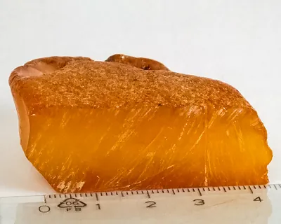
BernsteinBeste ZeitFoto: W.carter, CC BY-SA 4.0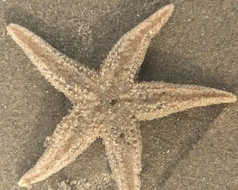
Gemeiner SeesternBeste ZeitFoto: Michel Langeveld, CC BY-SA 4.0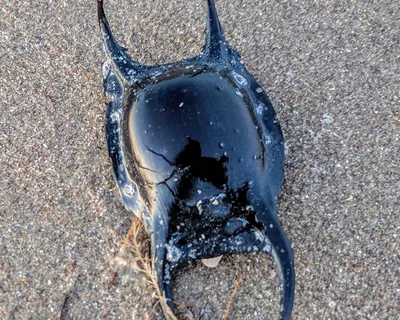
Nixentäschchen (Rochen-Ei)Beste ZeitFoto: Jbee flower, CC BY-SA 4.0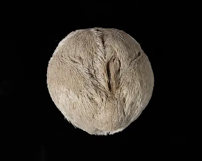
HerzigelBeste ZeitFoto: Auckland Museum, CC BY 4.0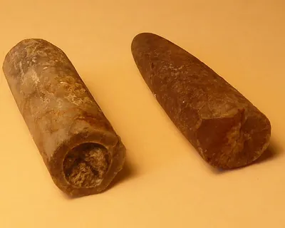
Donnerkeil (Belemnit)Beste ZeitFoto: Rhetos, CC0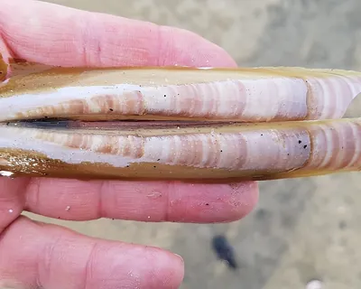
Amerikanische SchwertmuschelBeste ZeitFoto: Jakob Tougaard, CC BY 4.0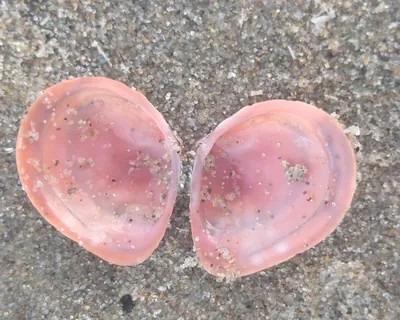
Baltische PlattmuschelBeste ZeitFoto: Michel Langeveld, CC BY-SA 4.0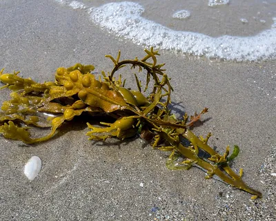
BlasentangBeste ZeitFoto: JackyM59, CC BY-SA 4.0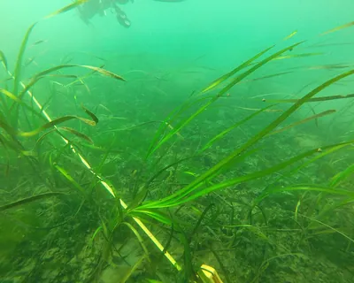
Gewöhnliches SeegrasBeste ZeitFoto: Evie Fachon, CC BY 4.0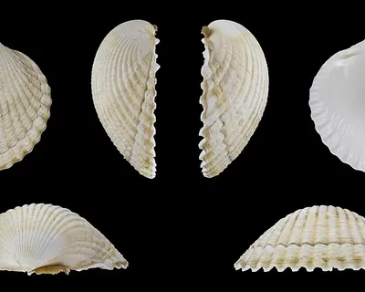
HerzmuschelBeste ZeitFoto: H. Zell, CC BY-SA 3.0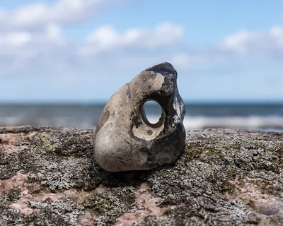
HühnergottBeste ZeitFoto: Ansgar Koreng, CC BY-SA 3.0 de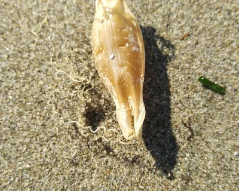
Katzenhai-EiBeste ZeitFoto: maribang, CC BY 4.0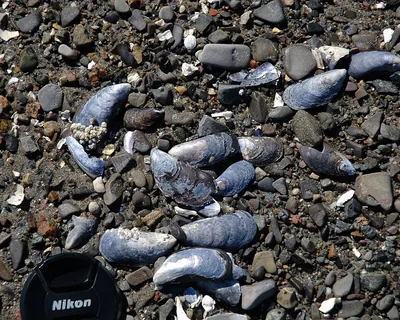
MiesmuschelBeste ZeitFoto: James St. John, CC BY 2.0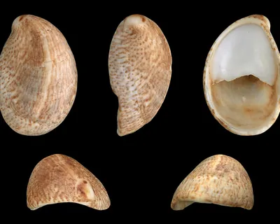
PantoffelschneckeBeste ZeitFoto: H. Zell, CC BY-SA 3.0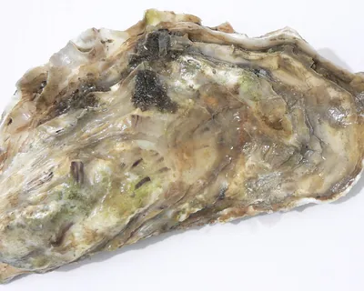
Pazifische AusterBeste ZeitFoto: David Monniaux, CC BY-SA 3.0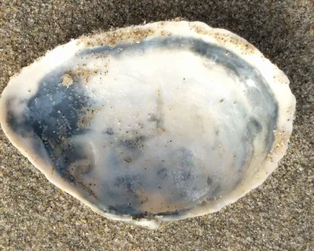
SandklaffmuschelBeste ZeitFoto: Michel Langeveld, CC BY-SA 4.0- BasstölpelBeste ZeitFoto: Andreas Trepte, CC BY-SA 2.5
- TrottellummeBeste ZeitFoto: Gary Bembridge, CC BY 2.0
- AusternfischerBeste ZeitFoto: Andreas Trepte, CC BY-SA 2.5
- SäbelschnäblerBeste ZeitFoto: Andreas Trepte, CC BY-SA 2.5
- BrandgansBeste ZeitFoto: Bernard Dupont, CC BY-SA 2.0
- RingelgansBeste ZeitFoto: Andreas Trepte, CC BY-SA 2.5
- AlpenstrandläuferBeste ZeitFoto: Charles Homler (Focus On Wildlife), CC BY-SA 4.0
- FlussseeschwalbeBeste ZeitFoto: Andreas Trepte, CC BY-SA 2.5
- SilbermöweBeste ZeitFoto: Aiwok, CC BY-SA 3.0
- KormoranBeste ZeitFoto: MPF, CC BY-SA 4.0
- LachmöweBeste ZeitFoto: Andreas Trepte, CC BY-SA 2.5
- HeringsmöweBeste ZeitFoto: Andreas Trepte, CC BY-SA 2.5
 SeehundBeste ZeitFoto: Bouke ten Cate, CC BY 4.0
SeehundBeste ZeitFoto: Bouke ten Cate, CC BY 4.0 SchweinswalBeste ZeitFoto: Ben Phalan, CC BY 4.0
SchweinswalBeste ZeitFoto: Ben Phalan, CC BY 4.0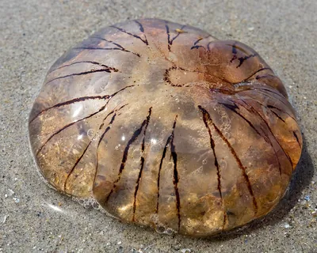
KompassqualleBeste ZeitFoto: JackyM59, CC BY-SA 4.0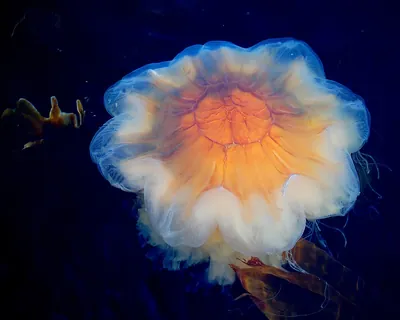
FeuerqualleBeste ZeitFoto: Arnstein Rønning, CC BY 3.0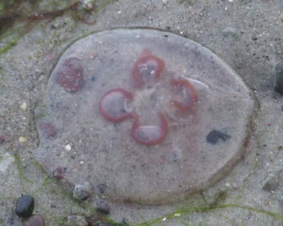
OhrenqualleBeste ZeitFoto: Joymaster, Gemeinfrei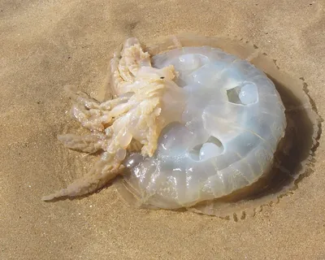
LungenqualleBeste ZeitFoto: Strobilomyces, CC BY-SA 3.0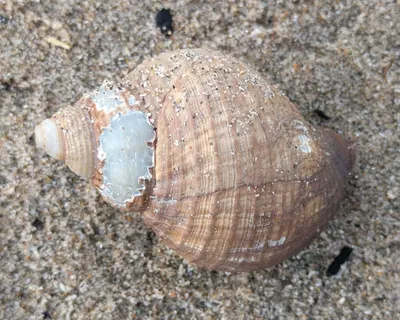
WellhornschneckeBeste ZeitFoto: Michel Langeveld, CC BY-SA 4.0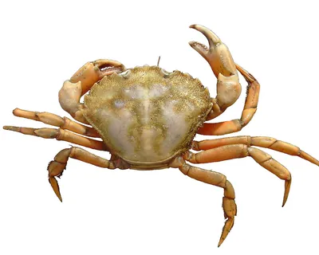
StrandkrabbeBeste ZeitFoto: Lycaon, CC BY-SA 3.0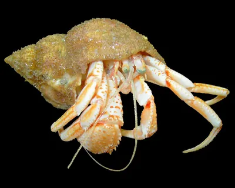
EinsiedlerkrebsBeste ZeitFoto: Hans Hillewaert, CC BY-SA 4.0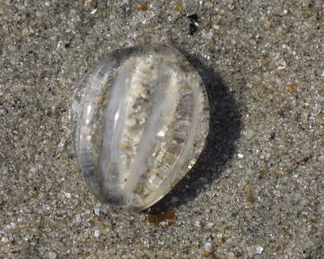
SeestachelbeereBeste ZeitFoto: Bj.schoenmakers, CC0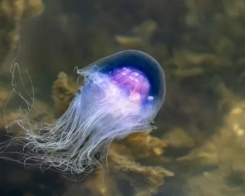
Blaue NesselqualleBeste ZeitFoto: W.carter, CC BY-SA 4.0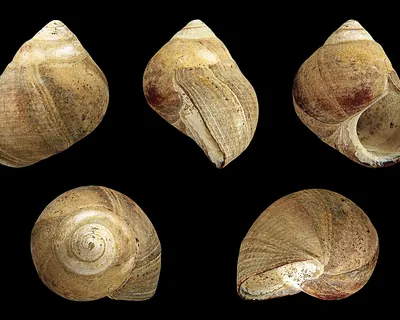
Gemeine StrandschneckeBeste ZeitFoto: H. Zell, CC BY-SA 3.0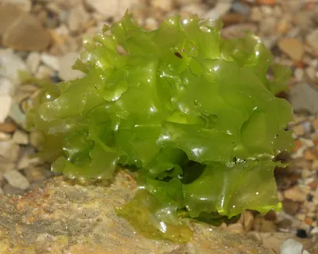
MeersalatBeste ZeitFoto: Holger Krisp, CC BY 3.0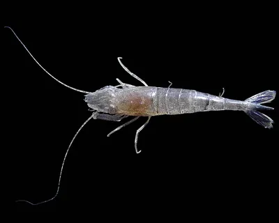
NordseegarneleBeste ZeitFoto: Hans Hillewaert, CC BY-SA 4.0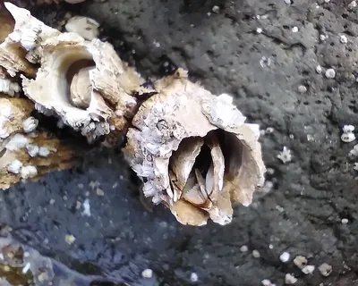
SeepockeBeste ZeitFoto: Bobjgalindo, CC BY-SA 4.0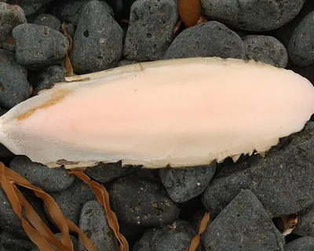
SepiaschaleBeste ZeitFoto: Gary Houston, CC0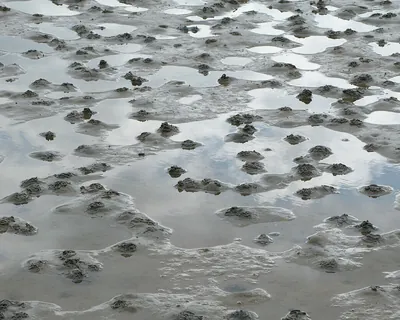
WattwurmBeste ZeitFoto: W.carter, Gemeinfrei
Funde
-
 Foto: Charles Homler (Focus On Wildlife), CC BY-SA 4.0 NordseeOstsee
Foto: Charles Homler (Focus On Wildlife), CC BY-SA 4.0 NordseeOstseeAlpenstrandläufer
SeevögelDer häufigste Watvogel im Wattenmeer, mit leicht gebogenem Schnabel. Im Sommer trägt er einen schwarzen Bauchfleck.
-
 Foto: Andreas Trepte, CC BY-SA 2.5 NordseeOstsee
Foto: Andreas Trepte, CC BY-SA 2.5 NordseeOstseeAusternfischer
SeevögelSchwarz-weißer Watvogel mit leuchtend orangerotem Schnabel und lautem, schrillem Ruf.
-
 Foto: Andreas Trepte, CC BY-SA 2.5 Nordsee
Foto: Andreas Trepte, CC BY-SA 2.5 NordseeBasstölpel
SeevögelGroßer weißer Seevogel mit schwarzen Flügelspitzen und gelblichem Kopf, der sich wie ein Pfeil ins Meer stürzt.
-
 Foto: Bernard Dupont, CC BY-SA 2.0 NordseeOstsee
Foto: Bernard Dupont, CC BY-SA 2.0 NordseeOstseeBrandgans
SeevögelBunte Halbgans: weiß mit rostbraunem Brustband, dunkelgrünem Kopf und leuchtend rotem Schnabel.
- Foto: Andreas Trepte, CC BY-SA 2.5 NordseeOstsee
Eiderente
SeevögelGroße, schwere Meeresente. Das Männchen ist schwarz-weiß mit grünem Nacken, das Weibchen braun gebändert.
-
 Foto: Andreas Trepte, CC BY-SA 2.5 NordseeOstsee
Foto: Andreas Trepte, CC BY-SA 2.5 NordseeOstseeFlussseeschwalbe
SeevögelSchlanker, weißer Seevogel mit schwarzer Kappe, rotem Schnabel und tief gegabeltem Schwanz.
-
 Foto: Andreas Trepte, CC BY-SA 2.5 NordseeOstsee
Foto: Andreas Trepte, CC BY-SA 2.5 NordseeOstseeHeringsmöwe
SeevögelSo groß wie die Silbermöwe, aber mit schiefergrauem Rücken und leuchtend gelben Beinen.
-
 Foto: MPF, CC BY-SA 4.0 NordseeOstsee
Foto: MPF, CC BY-SA 4.0 NordseeOstseeKormoran
SeevögelGroßer, dunkler Wasservogel, der oft mit ausgebreiteten Flügeln auf Buhnen und Pfählen sitzt.
-
 Foto: Andreas Trepte, CC BY-SA 2.5 NordseeOstsee
Foto: Andreas Trepte, CC BY-SA 2.5 NordseeOstseeLachmöwe
SeevögelKleine, wendige Möwe mit dunkelrotem Schnabel. Im Sommer trägt sie eine schokoladenbraune Kappe.
-
 Foto: Jean-Pierre Bazard, CC BY-SA 3.0 NordseeOstsee
Foto: Jean-Pierre Bazard, CC BY-SA 3.0 NordseeOstsee -
 Foto: Andreas Trepte, CC BY-SA 2.5 NordseeOstsee
Foto: Andreas Trepte, CC BY-SA 2.5 NordseeOstseeRingelgans
SeevögelKleine, dunkle Meeresgans mit schwarzem Kopf und Hals und einem schmalen weißen Halsring.
-
 Foto: Mdf, CC BY-SA 3.0 NordseeOstsee
Foto: Mdf, CC BY-SA 3.0 NordseeOstseeSanderling
SeevögelKleiner, heller Strandläufer, der wie ein Uhrwerk vor den auslaufenden Wellen hin und her rennt.
-
 Foto: Aiwok, CC BY-SA 3.0 NordseeOstsee
Foto: Aiwok, CC BY-SA 3.0 NordseeOstseeSilbermöwe
SeevögelDie typische große Möwe an Nord- und Ostsee: hellgrauer Rücken und gelber Schnabel mit rotem Fleck.
-
 Foto: Andreas Trepte, CC BY-SA 2.5 NordseeOstsee
Foto: Andreas Trepte, CC BY-SA 2.5 NordseeOstseeSturmmöwe
SeevögelMittelgroße Möwe mit freundlichem Gesicht: dünner, grüngelber Schnabel ohne roten Fleck und dunkles Auge.
-
 Foto: Andreas Trepte, CC BY-SA 2.5 NordseeOstsee
Foto: Andreas Trepte, CC BY-SA 2.5 NordseeOstsee -
 Foto: Gary Bembridge, CC BY 2.0 Nordsee
Foto: Gary Bembridge, CC BY 2.0 NordseeTrottellumme
SeevögelSchwarz-weißer Seevogel, der aussieht wie ein kleiner Pinguin und dicht gedrängt auf schmalen Felsbändern brütet.
-
 Foto: Jakob Tougaard, CC BY 4.0 Nordsee
Foto: Jakob Tougaard, CC BY 4.0 NordseeAmerikanische Schwertmuschel
MuschelnLange, schmale Muschel, die aussieht wie ein altes Rasiermesser.
-
 Foto: Michel Langeveld, CC BY-SA 4.0 NordseeOstsee
Foto: Michel Langeveld, CC BY-SA 4.0 NordseeOstsee -
 Foto: W.carter, CC BY-SA 4.0 NordseeOstsee
Foto: W.carter, CC BY-SA 4.0 NordseeOstseeBernstein
StrandfundeGoldgelbes bis braunes, sehr leichtes Harz aus Wäldern, die vor rund 40 Millionen Jahren wuchsen.
-
 Foto: JackyM59, CC BY-SA 4.0 NordseeOstsee
Foto: JackyM59, CC BY-SA 4.0 NordseeOstsee -
 Foto: W.carter, CC BY-SA 4.0 Nordsee
Foto: W.carter, CC BY-SA 4.0 NordseeBlaue Nesselqualle
QuallenBläuliche bis violette Qualle mit einem Vorhang aus feinen Tentakeln, die kleine Verwandte der Feuerqualle.
-
 Foto: Rhetos, CC0 NordseeOstsee
Foto: Rhetos, CC0 NordseeOstseeDonnerkeil (Belemnit)
StrandfundeSpitze, patronenförmige Versteinerung aus der Urzeit, der Rest eines ausgestorbenen Tintenfischs.
-
 Foto: Hans Hillewaert, CC BY-SA 4.0 Nordsee
Foto: Hans Hillewaert, CC BY-SA 4.0 NordseeEinsiedlerkrebs
Krebse & WürmerKrebs mit weichem Hinterleib, der in einem leeren Schneckenhaus wohnt und es mit sich herumträgt.
-
 Foto: Arnstein Rønning, CC BY 3.0 NordseeOstsee
Foto: Arnstein Rønning, CC BY 3.0 NordseeOstseeFeuerqualle
QuallenGroße, gelbrote Qualle mit einem dichten Vorhang aus langen, feinen Tentakeln. Auch Gelbe Haarqualle genannt.
-
 Foto: H. Zell, CC BY-SA 3.0 NordseeOstsee
Foto: H. Zell, CC BY-SA 3.0 NordseeOstseeGemeine Strandschnecke
SchneckenKleine, kegelförmige Schnecke mit dunkler, fein gestreifter Schale.
-
 Foto: Michel Langeveld, CC BY-SA 4.0 NordseeOstsee
Foto: Michel Langeveld, CC BY-SA 4.0 NordseeOstseeGemeiner Seestern
Seesterne & SeeigelOrange bis rotbrauner Seestern mit fünf Armen und vielen kleinen Füßchen auf der Unterseite.
-
 Foto: Evie Fachon, CC BY 4.0 NordseeOstsee
Foto: Evie Fachon, CC BY 4.0 NordseeOstseeGewöhnliches Seegras
Tang & SeegrasGrasähnliche Meerespflanze mit langen, schmalen Blättern, die im Flachwasser Wiesen bildet.
-
 Foto: Auckland Museum, CC BY 4.0 Nordsee
Foto: Auckland Museum, CC BY 4.0 NordseeHerzigel
Seesterne & SeeigelSeeigel mit herzförmigem, sehr dünnem Gehäuse. Am Strand findest du meist nur die weiße Schale ohne Stacheln.
-
 Foto: H. Zell, CC BY-SA 3.0 NordseeOstsee
Foto: H. Zell, CC BY-SA 3.0 NordseeOstseeHerzmuschel
MuschelnRundliche, gerippte Muschel. Zwei Hälften zusammen sehen von der Seite aus wie ein Herz.
-
 Foto: Ansgar Koreng, CC BY-SA 3.0 de NordseeOstsee
Foto: Ansgar Koreng, CC BY-SA 3.0 de NordseeOstseeHühnergott
StrandfundeEin Feuerstein mit einem natürlichen Loch. Er gilt an der Küste als Glücksbringer.
-
 Foto: maribang, CC BY 4.0 Nordsee
Foto: maribang, CC BY 4.0 NordseeKatzenhai-Ei
StrandfundeGelbbraune, durchscheinende Eikapsel mit langen, gekringelten Ranken an den Ecken. Die Eihülle des Kleingefleckten Katzenhais.
-
 Foto: Andreas Trepte, CC BY-SA 2.5 NordseeOstsee
Foto: Andreas Trepte, CC BY-SA 2.5 NordseeOstseeKegelrobbe
MeeressäugerGrößtes Raubtier Deutschlands, mit langer, gerader Schnauze und weißen Jungen im Winter.
-
 Foto: JackyM59, CC BY-SA 4.0 Nordsee
Foto: JackyM59, CC BY-SA 4.0 NordseeKompassqualle
QuallenQualle mit braunen, V-förmigen Streifen auf dem Schirm, die wie eine Kompassrose aussehen.
-
 Foto: Strobilomyces, CC BY-SA 3.0 Nordsee
Foto: Strobilomyces, CC BY-SA 3.0 NordseeLungenqualle
QuallenSehr große, feste Qualle mit bläulichem Rand und dicken, krausen Mundarmen statt Tentakeln.
-
 Foto: Holger Krisp, CC BY 3.0 NordseeOstsee
Foto: Holger Krisp, CC BY 3.0 NordseeOstsee -
 Foto: James St. John, CC BY 2.0 NordseeOstsee
Foto: James St. John, CC BY 2.0 NordseeOstseeMiesmuschel
MuschelnLängliche, blauschwarze Muschel, die in dichten Bänken an Steinen, Buhnen und im Watt sitzt.
-
 Foto: Jbee flower, CC BY-SA 4.0 Nordsee
Foto: Jbee flower, CC BY-SA 4.0 NordseeNixentäschchen (Rochen-Ei)
StrandfundeSchwarze, rechteckige Eikapsel mit vier Hörnchen. Darin ist ein junger Rochen herangewachsen.
-
 Foto: Hans Hillewaert, CC BY-SA 4.0 NordseeOstsee
Foto: Hans Hillewaert, CC BY-SA 4.0 NordseeOstseeNordseegarnele
Krebse & WürmerKleine, sandfarbene Garnele, die sich blitzschnell im Sand eingräbt. Auf dem Teller heißt sie Krabbe.
-
 Foto: Joymaster, Gemeinfrei NordseeOstsee
Foto: Joymaster, Gemeinfrei NordseeOstseeOhrenqualle
QuallenDurchsichtige, flache Qualle mit vier ringförmigen Organen in der Mitte, die wie Ohren aussehen.
-
 Foto: H. Zell, CC BY-SA 3.0 Nordsee
Foto: H. Zell, CC BY-SA 3.0 NordseePantoffelschnecke
SchneckenFlache Schnecke, die innen ein kleines Querbrett hat und dadurch aussieht wie ein Pantoffel.
-
 Foto: David Monniaux, CC BY-SA 3.0 Nordsee
Foto: David Monniaux, CC BY-SA 3.0 NordseePazifische Auster
MuschelnGroße, unregelmäßig geformte Muschel mit blättrig-schuppiger, grauer Schale.
-
 Foto: Michel Langeveld, CC BY-SA 4.0 NordseeOstsee
Foto: Michel Langeveld, CC BY-SA 4.0 NordseeOstseeSandklaffmuschel
MuschelnGroße, ovale, kreideweiße Muschel, deren Hälften hinten nicht ganz schließen.
-
 Foto: Ben Phalan, CC BY 4.0 NordseeOstsee
Foto: Ben Phalan, CC BY 4.0 NordseeOstsee -
 Foto: Bouke ten Cate, CC BY 4.0 NordseeOstsee
Foto: Bouke ten Cate, CC BY 4.0 NordseeOstseeSeehund
MeeressäugerHäufigste Robbe an der Nordsee mit rundem Kopf, kurzer Schnauze und großen dunklen Augen.
-
 Foto: Bobjgalindo, CC BY-SA 4.0 NordseeOstsee
Foto: Bobjgalindo, CC BY-SA 4.0 NordseeOstseeSeepocke
Krebse & WürmerKleiner weißer Kegel aus Kalkplatten auf Steinen und Muscheln. Darin wohnt ein Krebs, der auf dem Kopf steht.
-
 Foto: Bj.schoenmakers, CC0 NordseeOstsee
Foto: Bj.schoenmakers, CC0 NordseeOstseeSeestachelbeere
QuallenKleine, glasklare Kugel mit acht Rippen. Eine Rippenqualle, keine echte Qualle, und sie brennt nicht.
-
 Foto: Gary Houston, CC0 Nordsee
Foto: Gary Houston, CC0 NordseeSepiaschale
StrandfundeWeiße, ovale und sehr leichte Platte. Es ist die innere Schale eines Tintenfischs, des Gemeinen Tintenfischs.
-
 Foto: Lycaon, CC BY-SA 3.0 NordseeOstsee
Foto: Lycaon, CC BY-SA 3.0 NordseeOstseeStrandkrabbe
Krebse & WürmerHäufigste Krabbe an unseren Küsten, grünlich bis braun, mit fünf Zacken an jeder Panzerseite.
-
 Foto: W.carter, Gemeinfrei NordseeOstsee
Foto: W.carter, Gemeinfrei NordseeOstseeWattwurm
Krebse & WürmerGroßer Wurm, der in einer U-förmigen Röhre im Watt lebt. Bekannt sind seine geringelten Sandhaufen.
-
 Foto: Michel Langeveld, CC BY-SA 4.0 Nordsee
Foto: Michel Langeveld, CC BY-SA 4.0 NordseeWellhornschnecke
SchneckenGroße Meeresschnecke mit welligen Rippen. Ihre Laichballen sehen aus wie ein gelber Schaumstoffklumpen.
Kein Fund passt zu deiner Suche oder Auswahl.
Nordsee oder Ostsee?
Die beiden Meere sind sehr verschieden. Das merkst du schon daran, was am Strand liegt und welche Vögel dort leben.
- NordseeSalziges Gezeitenmeer mit dem Wattenmeer, einem der wichtigsten Rastgebiete für Zugvögel weltweit.
- Ebbe und Flut, 2 bis 4 Meter Unterschied
- Wattenmeer, Halligen und Sandbänke
- Seehunde, Basstölpel und Trottellummen
- OstseeEin fast geschlossenes Binnenmeer mit Bodden, Förden und Steilküsten. Im Winter rasten hier riesige Entenschwärme.
- Kaum Gezeiten, der Wind bestimmt den Wasserstand
- Viel weniger Salz als die Nordsee
- Bernstein, Feuersteine und Steilküsten
Gut ausgerüstet an den Strand
Alle Empfehlungen ansehen-
Celestron Nature DX 8x42
Celestron
Für Seevögel im Watt und Robben auf der Sandbank, aus sicherem Abstand. 8-fache Vergrößerung, wasserdicht und leicht.
Bei Amazon ansehen Celestron Nature DX 8x42 (Werbelink, öffnet in neuem Fenster) - Unser Tipp
Vogelführer für Küste und Meer
Auswahl bei Amazon
Möwen, Watvögel und Seeschwalben ähneln sich oft. Ein Vogelführer mit Bildern der Jugend- und Winterkleider hilft beim Bestimmen.
Bei Amazon ansehen Vogelführer für Küste und Meer (Werbelink, öffnet in neuem Fenster) - Beispielfoto · Foto: Amber Bugs, CC BY-SA 4.0
 Unser Tipp
Unser TippUV-Taschenlampe 365 nm
Auswahl bei Amazon
Bernstein leuchtet unter UV-Licht bläulich bis gelb und fällt so im Tangsaum sofort auf. Nicht in die Augen leuchten.
Bei Amazon ansehen UV-Taschenlampe 365 nm (Werbelink, öffnet in neuem Fenster) - Unser Tipp
Bestimmungsbuch Strand und Küste
Auswahl bei Amazon
Ein handliches Bestimmungsbuch für Muscheln, Schnecken, Quallen und Strandfunde an Nord- und Ostsee passt in jede Strandtasche.
Bei Amazon ansehen Bestimmungsbuch Strand und Küste (Werbelink, öffnet in neuem Fenster) -
Becherlupe
Auswahl bei Amazon
Krabbe, Garnele oder Seestachelbeere kurz in Meerwasser setzen und von allen Seiten vergrößert anschauen. Danach zurück ins Wasser.
Bei Amazon ansehen Becherlupe (Werbelink, öffnet in neuem Fenster) -
Kescher mit Teleskopstiel
Auswahl bei Amazon
Für Garnelen und kleine Krebse im Priel. Ein feines Netz schont die Tiere.
Bei Amazon ansehen Kescher mit Teleskopstiel (Werbelink, öffnet in neuem Fenster) -
Wattschuhe
Auswahl bei Amazon
Schützen im Watt vor scharfen Austern, Seepocken und Muschelschalen und sitzen auch im Schlick fest am Fuß.
Bei Amazon ansehen Wattschuhe (Werbelink, öffnet in neuem Fenster) -
Sortierbox für Muscheln und Steine
Auswahl bei Amazon
Mit vielen kleinen Fächern, damit zerbrechliche Funde wie Herzigel und Plattmuscheln heil nach Hause kommen.
Bei Amazon ansehen Sortierbox für Muscheln und Steine (Werbelink, öffnet in neuem Fenster)
Werbelink: Wenn du über diesen Link etwas kaufst, erhält der Strandkompass eine kleine Provision von Amazon. Für dich ändert sich am Preis nichts. Als Amazon-Partner verdiene ich an qualifizierten Verkäufen.
Weiter entdecken
- Sicher am StrandWelche Quallen brennen, was tun bei einem Heuler, und warum du Bernstein nie in die Hosentasche steckst.
- Doppelgänger unterscheidenSilbermöwe oder Heringsmöwe, Ohrenqualle oder Kompassqualle: 15 Vergleiche mit den entscheidenden Merkmalen.
- Das StrandjahrLummensprung, Vogelzug, Quallenzeit und Bernstein nach dem Sturm: was am Strand wann passiert, Monat für Monat.
- AusrüstungUV-Lampe für die Bernsteinsuche, Becherlupe, Kescher und Wattschuhe.
- Nordsee oder Ostsee?Gezeiten, Salzgehalt, Watt und Steilküste: was die beiden Meere unterscheidet und was du wo findest.
- Noch mehr VögelGarten-, Feld- und Waldvögel bestimmst du auf der Schwesterseite Vogelkompass.